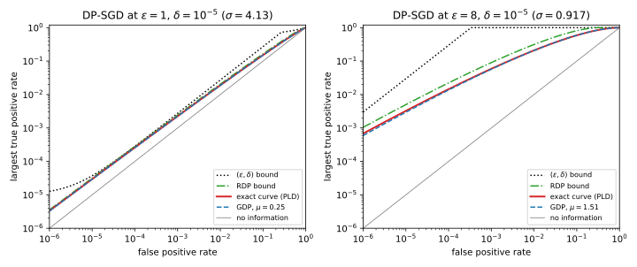
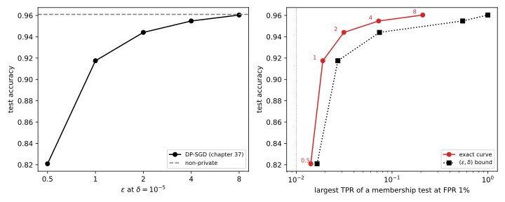

44 Choosing ε
44.1 Why this matters
Every model trained with differential privacy (DP) ships with a budget \(\varepsilon\), and someone has to pick it. Stochastic gradient descent (SGD) with per-example clipping and Gaussian noise, DP-SGD, makes the accuracy side of that choice easy to measure. On this part’s running example, a small neural network trained on 10,000 records at \(\delta = 10^{-5}\), test accuracy is 0.9175 at \(\varepsilon = 1\), 0.9441 at \(\varepsilon = 2\), 0.9548 at \(\varepsilon = 4\) and 0.9604 at \(\varepsilon = 8\), against 0.9610 without privacy (DP-SGD). That is half of the decision. The other half is what each budget allows an attacker to learn about one person in the data. Without it, \(\varepsilon\) gets chosen by habit (“everyone uses 8”) or by the accuracy curve alone, and neither answer holds up when a reviewer asks what the number promises.
The idea that organizes the chapter is that \(\varepsilon\) is one line under a curve. An attacker deciding whether a record was used runs a test, and the test has a false positive rate and a true positive rate. A pair \((\varepsilon, \delta)\) draws one straight line that caps those rates. A training algorithm actually has a whole curve, the best true positive rate at every false positive rate, and that curve can lie far below the line. At \(\varepsilon = 8\) the line allows a test that catches nearly every member while almost never accusing a non-member. The curve of DP-SGD at the same \(\varepsilon\) caps the true positive rate at 0.0589 when the false positive rate is \(10^{-3}\). Choosing \(\varepsilon\) well means computing the curve, reading it at the error rates your threat cares about, and reporting it.
44.2 What one (ε, δ) pair promises
Start with what “trained with \((8, 10^{-5})\)” forbids on its own, which is all you can say about a model whose training algorithm you have not seen. A membership attacker sees the model and says “member” on some set of outputs. Its true positive rate (TPR) is how often it says “member” when the target was in the training set, and its false positive rate (FPR) is how often it says so when the target was not. Both are probabilities of the same event in the two worlds, and DP bounds exactly that (The definition of differential privacy). Applied to the “member” event it gives the first line below; applied the other way round to the “non-member” event, it gives the second: \[\mathrm{TPR} \le \min\big\{1,\ e^\varepsilon\,\mathrm{FPR} + \delta,\ 1 - e^{-\varepsilon}(1 - \delta - \mathrm{FPR})\big\}. \tag{44.1}\]
Attacks are judged by their TPR at an FPR of \(10^{-3}\) or below (Membership inference), because an attack that flags members while almost never flagging non-members is one that identifies people with confidence. There the first line binds. At \(\varepsilon = 1\) it caps the TPR at \(e \times 10^{-3} + 10^{-5} = 0.002728\), a real constraint. At \(\varepsilon = 4\) the cap is 0.05461. At \(\varepsilon = 8\) the line reaches 1 from an FPR of \(3.35\times10^{-4}\) on, so the pair says nothing at all at the false positive rates where attacks are usually evaluated.
The advantage, TPR minus FPR, is often quoted instead. The pair bounds it by \((e^\varepsilon - 1 + 2\delta)/(e^\varepsilon + 1)\): 0.4621 at \(\varepsilon = 1\) and 0.9640 at \(\varepsilon = 4\), numbers that make \(\varepsilon = 4\) sound hopeless. But the bound is tight only for the worst mechanism with this \(\varepsilon\), randomized response, whose curve is exactly the two lines, and DP-SGD is not that mechanism. Read through the pair alone, \(\varepsilon \le 2\) is strong everywhere, \(\varepsilon = 4\) is meaningful only at very low FPR, and \(\varepsilon \ge 8\) is no guarantee against membership inference. For DP-SGD, the second and third of these conclusions are far too pessimistic.
44.3 The whole curve of DP-SGD
The accountant that reported \(\varepsilon\) at \(\delta = 10^{-5}\) could just as well have reported it at \(\delta = 10^{-6}\) or \(10^{-3}\). The mechanism has a whole privacy profile \(\delta(\varepsilon)\), and every point of it is another line that every test must satisfy. The best TPR an attacker can reach at each FPR is the lower envelope of all those lines, the trade-off curve. Each line touches the curve at one point, and the line the accountant reports at \(\delta = 10^{-5}\) touches it only at a false positive rate below \(10^{-4}\) for every run here. Everywhere else the reported line is a loose summary.
For DP-SGD the curve can be computed. The best test thresholds the privacy loss, the log of how much more likely the run’s output is with the record than without (the Neyman–Pearson lemma). Each step adds fresh noise, so the losses of the steps add up. The distribution of the total, the privacy loss distribution (PLD), is what a numerical accountant already computes, rounded up and down on a grid so that it brackets the truth (Numerical accounting). Two cheaper answers sit around it. The Rényi differential privacy (RDP) curve that set the noise gives a valid but looser bound for free. The Gaussian differential privacy (GDP) approximation replaces the run by two unit normals at distance \(\mu = q\sqrt{T(e^{1/\sigma^2} - 1)}\), for sampling rate \(q\), noise multiplier \(\sigma\) and \(T\) steps (f-DP and Gaussian DP); it is an approximation, not a bound.
Table 44.1 puts the four answers side by side at FPR \(10^{-3}\) for the running example, with \(q = 0.01\), \(T = 10{,}000\) and the noise multiplier the RDP accountant requires for each target.
| \(\varepsilon\) | \(\sigma\) | Pair | RDP bound | Exact (PLD bracket) | GDP |
|---|---|---|---|---|---|
| 0.5 | 7.72 | 0.001659 | 0.00161 | [0.001524, 0.001554] | 0.001537 |
| 1 | 4.13 | 0.002728 | 0.002427 | [0.002209, 0.00225] | 0.002224 |
| 2 | 2.28 | 0.007399 | 0.005033 | [0.004267, 0.004342] | 0.004273 |
| 4 | 1.36 | 0.05461 | 0.01668 | [0.01215, 0.01312] | 0.01244 |
| 8 | 0.917 | 0.9997 | 0.09016 | [0.05555, 0.0589] | 0.05719 |
| 16 | 0.695 | 1 | 0.4971 | [0.2714, 0.2808] | 0.3234 |
The pair overstates the attacker, and more so the larger \(\varepsilon\) (Figure 44.1): by a factor of about 1.2 at \(\varepsilon = 1\), about 4 at \(\varepsilon = 4\) and about 17 at \(\varepsilon = 8\). The advantage tells the same story, since the pair allows 0.9640 at \(\varepsilon = 4\) and DP-SGD at most 0.3429. At this FPR, GDP lands inside the exact bracket up to \(\varepsilon = 8\), but at \(\varepsilon = 16\) it reports 0.3234 against an exact value of at most 0.2808. There \(\mu = 2.632\), outside the regime where the central limit theorem behind it holds. Use GDP to explain a curve, and the PLD or the RDP bound to certify one.

The curve is the best test of a strong attacker: one who knows every other record and every hyperparameter, sees every intermediate model, and targets a record whose clipped gradient is as large as clipping allows at every step. Nasr et al. (2021) showed that such an attacker, choosing the target’s gradient, does reach the accountant’s guarantee. A typical record attacked through the final model is much safer. On the running example, a loss-threshold attack has its TPR within 0.004 of its FPR at every budget, nearly at chance even against the non-private model. That describes this attack on this task, not a guarantee. Auditing private training builds the attacks that come close to the curve.
44.4 What an attacker can believe
People who are not statisticians ask a different question: if someone sees the model, how sure can they be that I was in the data? Bayes’ rule answers it. The attacker’s odds that you are a member, after seeing an output, are its odds before times \(e^L\), where \(L\) is that output’s privacy loss. If no output has loss above \(\varepsilon\), a prior belief \(p\) can rise to at most \[\frac{p\,e^\varepsilon}{p\,e^\varepsilon + 1 - p}. \tag{44.2}\] DP bounds the change of belief, not the belief. At \(\varepsilon = 1\) an attacker who starts at 1% can reach at most 2.67%. At \(\varepsilon = 8\) it can reach 96.79%, so read through this bound, \(\varepsilon = 8\) permits near certainty.
That bound treats every output as the worst one. For DP-SGD the loss is a random variable, and the PLD says how it is spread (Figure 44.2). For a worst-case member of the \(\varepsilon = 8\) run, the median total loss is 1.136, which moves a 1% prior to 0.0305, and the loss exceeds 5.971, which moves it to 0.7984, only with probability \(10^{-3}\). At \(\varepsilon = 4\) the same two points give 0.0149 and 0.1771. The probability that the loss exceeds the reported \(\varepsilon\) at all is of the order of \(\delta\), between \(3.78\times10^{-6}\) and \(1.10\times10^{-4}\) across the runs.

Base rates matter just as much. An attacker who acts on a flag is right with probability \(p\,\mathrm{TPR}/(p\,\mathrm{TPR} + (1 - p)\,\mathrm{FPR})\), and at a small prior even a large ratio TPR/FPR leaves most flags wrong. At \(\varepsilon = 8\), prior 1% and FPR \(10^{-2}\), the pair allows a precision of 0.5024, while the exact curve allows 0.1744: five flags out of six are false. So say who the attacker is. Against the \(\varepsilon = 2\) run, an insider who knows you are one of two candidates (prior 0.5) can reach 0.8808 on the worst output, while a stranger with prior 0.01 reaches at most 0.0695. The guarantee is the same; what it protects against depends on what the attacker knew before.
44.5 Reconstruction
Many harms need more than membership: recovering a diagnosis or a face the attacker does not have (Reconstruction attacks). Give the attacker every other training record and a prior over the target, and let \(\kappa\) be its best success without the model, \(1/m\) for one of \(m\) equally likely candidates. Any reconstruction attack is also a membership test for its own guess, and averaged over the prior that test’s false positive rate is at most \(\kappa\), because a model trained without the target cannot help guess it. Because the curve is concave, averaging over the candidates cannot help, so reconstruction succeeds with probability at most the trade-off curve read at FPR \(\kappa\), or \(e^\varepsilon\kappa + \delta\) from the pair alone. Balle, Cherubin & Hayes (2022) introduced this informed adversary and its bounds from pure DP and RDP; Hayes, Mahloujifar & Balle (2023) gave the bound from DP-SGD’s whole curve.
A large prior uncertainty is a small FPR, exactly where DP-SGD’s curve lies far below the line. At \(\varepsilon = 8\) the pair gives no bound for any \(m\) up to 1,000, but the curve caps the success of choosing among 1,000 equally likely candidates at 0.0589, against 0.001 by guessing. Even \(\varepsilon = 16\) keeps it at most 0.2808. The catch is the prior. If the attacker can narrow the target to two values, as with one unknown binary field in an otherwise known record, \(\kappa = 0.5\) and reconstruction is as easy as membership at FPR 0.5. A defensible reconstruction claim names its prior: “an attacker who knows the target is one of \(m\) records”.
44.6 How small δ must be
A deliberately bad mechanism shows what \(\delta\) permits: publish each record in full, independently with probability \(\delta\). It is \((0, \delta)\)-DP, yet it exposes at least one of \(n\) records with probability \(1 - (1 - \delta)^n\), which is 0.6321 at \(\delta = 1/n\) for \(n = 10{,}000\). So a meaningful guarantee needs \(n\delta \ll 1\), where \(n\) counts the privacy units, usually people (User-level differential privacy). NIST’s guidelines (SP 800-226) write that a common recommendation is \(\delta \le 1/n^2\), that \(1/(n\log n)\) is another sensible choice, and that values above \(10^{-5}\) are suspicious and should be justified. The running example’s \(10^{-5}\) with 10,000 records has \(n\delta = 0.1\).
DP-SGD spends its \(\delta\) very differently from that mechanism: on outputs whose loss is just above \(\varepsilon\), not on outputs that identify someone with certainty, because its loss has a light, nearly Gaussian tail. That is why shrinking \(\delta\) is cheap (Table 44.2). For the \(\varepsilon = 1\) and \(\varepsilon = 4\) runs, every factor of 100 in \(\delta\) costs between about 0.2 and 0.9 in \(\varepsilon\). Meeting the \(1/n^2 = 10^{-8}\) rule makes the \(\varepsilon = 4\) run \((5.209, 10^{-8})\)-DP. When in doubt, use a smaller \(\delta\).
| Run (\(\sigma\)) | \(\delta = 10^{-4}\) | \(10^{-5}\) | \(10^{-6}\) | \(10^{-8}\) | \(10^{-10}\) |
|---|---|---|---|---|---|
| \(\varepsilon = 1\) (4.13) | 0.852 | 0.999 | 1.129 | 1.354 | 1.548 |
| \(\varepsilon = 4\) (1.36) | 3.501 | 3.993 | 4.432 | 5.209 | 5.890 |
| \(\varepsilon = 8\) (0.917) | 7.088 | 7.997 | 8.821 | 10.301 | 11.627 |
44.7 Deployed values and their units
“Industry uses \(\varepsilon\) between 1 and 10” is a common justification. It hides two things every \(\varepsilon\) needs: the privacy unit, meaning what one neighbouring change is (one record, one user-day, one user forever), and the period over which the budget is spent. Table 44.3 lists documented deployments, and the units differ from row to row.
| Deployment | Accounting | Privacy unit and period | Published parameters |
|---|---|---|---|
| US Census Bureau, 2020 redistricting data | Zero-concentrated DP | One person’s record, replace-one; one release | \(\varepsilon = 17.14\) for persons plus 2.47 for housing, at \(\delta = 10^{-10}\) |
| Google Gboard language models | Zero-concentrated DP | One device’s data, whole training run | \(\varepsilon\) from 4.49 to 13.69 at \(\delta = 10^{-10}\); later models down to 0.994 |
| Apple, local DP on iOS and macOS | Pure \(\varepsilon\) per donation | One donation; limited donations per day | Emoji 4, one per day; QuickType 8, two per day |
| LinkedIn Audience Engagements API | Gaussian and Laplace noise on counts | One member, per analyst, per month | \((0.15, 10^{-10})\) per result; \((34.9, 7\times10^{-9})\) per month |
These numbers are not comparable until they are converted. The Census and Gboard figures come from zero-concentrated differential privacy (zCDP), whose parameter \(\rho\) converts to \(\varepsilon\) by \(\varepsilon = \rho + 2\sqrt{\rho\ln(1/\delta)}\) or, a little more tightly, numerically (Concentrated differential privacy). A replace-one guarantee is two add/remove steps. A per-day budget composes over days: QuickType’s two donations spend 16 a day. Try calling the running example’s \(\varepsilon = 8\) run “less than half the Census budget”. The Census figure is replace-one at \(\delta = 10^{-10}\), while the run is add/remove at \(10^{-5}\). At \(\delta = 10^{-10}\) the run is at 11.627, and replace-one can double an add/remove guarantee. After converting, the two are of the same order, a weaker claim than the slogan. NIST notes that many deployments have used \(1 < \varepsilon \le 20\), which is a fact about practice, not evidence that a value is safe.
44.8 Justifying a choice
A defensible \(\varepsilon\) fixes the claim before the number. State the unit, the neighbouring relation and the period, counting every training run and hyperparameter search that touched the data (Hyperparameter tuning). Name the threat, because an insider reads the curve near its middle and an attacker choosing among a thousand candidates reads it at \(10^{-3}\). Compute the whole guarantee with a tight accountant and \(\delta\) well below \(1/n\). Add evidence that the code runs the algorithm the proof is about, such as an audit (Auditing private training). Only then compare with reference points. Ponomareva et al. (2023) call \(\varepsilon \le 1\) strong formal guarantees and \(\varepsilon \le 10\) a reasonable level of anonymization for many applications; above 10, the guarantee alone cannot be taken as sufficient evidence and measures such as auditing may be necessary. NIST gives no rule for choosing \(\varepsilon\), warns that releases with \(\varepsilon\) of 10 or more can leave outliers vulnerable, and recommends publishing the parameters.
The last step is utility, read against risk. The accuracy curve is steeply non-linear, so the cost of halving \(\varepsilon\) varies by an order of magnitude along it (Figure 44.3). Going from \(\varepsilon = 1\) to 2 gains 2.66 points of accuracy and moves the exact TPR at FPR 1% from at most 0.01893 to at most 0.03141. From 4 to 8 gains 0.56 points and nearly triples that TPR, to at most 0.2092. Past \(\varepsilon = 4\), each point of accuracy is bought with a much larger increase in worst-case risk, and the smallest budget past the bend in accuracy is the natural candidate.

The usual tiers make sense in this light. Below 1 the pair’s line is already tight enough for any mechanism. Between 1 and 10, DP-SGD’s actual curve is far below the line. Above 10 even the actual curve allows substantial attacks on worst-case records, with a TPR above 0.27 at FPR \(10^{-3}\) at \(\varepsilon = 16\). Following the procedure, a team that picks the \(\varepsilon = 4\) run might write:
The model was trained with DP-SGD (Poisson sampling rate 0.01, noise multiplier 1.36, clipping norm 0.5, 10,000 steps) on 10,000 records, one record per person. The privacy unit is one record under add/remove neighbours; no other run touched the training data. The RDP accountant gives \((3.993, 10^{-5})\)-DP and \((5.209, 10^{-8})\)-DP; a PLD accountant gives \(\varepsilon \le 3.729\) at \(\delta = 10^{-5}\). Against an attacker who knows every other record and sees every iterate, any membership test has TPR at most 0.01312 at FPR \(10^{-3}\) and at most 0.0724 at FPR \(10^{-2}\), and any attack that picks a record out of 100 equally likely candidates succeeds with probability at most 0.0724. Test accuracy is 0.9548, against 0.9610 without privacy.
A reviewer who thinks \(\varepsilon = 4\) is too large can now argue about the TPR at a specific FPR, which is where the substance is.
44.9 Code
This snippet turns a claimed pair into what it allows, and checks the conversions of this chapter:
from math import exp, log, sqrt
def pair_tpr_cap(eps: float, delta: float, fpr: float) -> float:
"""The largest TPR any test can reach at a given FPR, from the pair (eps, delta) alone."""
return min(1.0, exp(eps) * fpr + delta, 1 - exp(-eps) * (1 - delta - fpr))
def posterior_bound(eps: float, prior: float) -> float:
"""The largest posterior probability of membership when the privacy loss is at most eps."""
return prior * exp(eps) / (prior * exp(eps) + 1 - prior)
def flag_precision(prior: float, tpr: float, fpr: float) -> float:
"""How often an attacker acting on a 'member' flag is right."""
return prior * tpr / (prior * tpr + (1 - prior) * fpr)
def exposure(delta: float, n: int) -> float:
"""Probability that 'publish each record with probability delta' exposes someone."""
return 1 - (1 - delta) ** n
def zcdp_to_eps(rho: float, delta: float) -> float:
"""The simple zCDP to (eps, delta) conversion of Bun & Steinke."""
return rho + 2 * sqrt(rho * log(1 / delta))
print(f"{pair_tpr_cap(4, 1e-5, 1e-3):.5f}") # 0.05461
print(f"{posterior_bound(8, 0.01):.4f}") # 0.9679
print(f"{flag_precision(0.01, 0.2092, 0.01):.4f}") # 0.1744
print(f"{exposure(1e-4, 10_000):.4f}") # 0.6321
print(f"{zcdp_to_eps(2.56, 1e-10):.3f}") # 17.915The last line converts the Census Bureau’s \(\rho = 2.56\) for persons; the Bureau’s 17.14 comes from a tighter conversion. The exact curve needs a PLD accountant; the full edition’s script computes it and every other number in this chapter, in two to three minutes:
uv run python code/part05-dp-ml/choosing_epsilon.py44.10 Cheat sheet
| Result | Formula or value | Notes |
|---|---|---|
| One pair | \(\mathrm{TPR} \le e^\varepsilon\mathrm{FPR} + \delta\); advantage \(\le \frac{e^\varepsilon - 1 + 2\delta}{e^\varepsilon + 1}\) | Any \((\varepsilon, \delta)\)-DP mechanism; no constraint once \(e^\varepsilon\mathrm{FPR} + \delta \ge 1\) |
| Whole curve | Lower envelope of the lines of the privacy profile; traced by thresholding the PLD | Exact for DP-SGD from a numerical accountant |
| RDP and GDP curves | RDP: valid bound, looser; GDP: \(\mu = q\sqrt{T(e^{1/\sigma^2} - 1)}\) | GDP is an approximation, not a bound |
| Posterior | \(\le pe^\varepsilon/(pe^\varepsilon + 1 - p)\) | Bounds the change in belief; the typical loss is far below \(\varepsilon\) |
| Precision of a flag | \(p\,\mathrm{TPR}/(p\,\mathrm{TPR} + (1 - p)\mathrm{FPR})\) | Base rates dominate at small \(p\) |
| Reconstruction | Success \(\le\) the curve at FPR \(\kappa\); pair: \(e^\varepsilon\kappa + \delta\) | State the attacker’s prior |
| \(\delta\) | \(\delta \ll 1/n\); NIST cites a common recommendation of \(\le 1/n^2\) | \(n\) counts privacy units; cheap to shrink for DP-SGD |
Rules of thumb
- Report the curve, not just the pair: the TPR at FPR \(10^{-3}\) and \(10^{-2}\), from a PLD accountant or bounded with RDP.
- State the unit, the neighbouring relation, the period and \(\delta\) with every \(\varepsilon\), and convert before comparing with anyone else’s.
- \(\varepsilon \le 1\) is strong for any mechanism. Between 1 and 10, DP-SGD’s curve is your justification. Above 10, show the curve and an audit, and expect worst-case records to be exposed.
- Put the accuracy curve next to the risk curve and pick the smallest budget past the bend.
44.11 Further reading
- Kairouz, Oh & Viswanath, “The Composition Theorem for Differential Privacy” (ICML 2015), and Dong, Roth & Su, “Gaussian Differential Privacy” (JRSS B, 2022): the testing view of DP and trade-off curves.
- Hayes, Mahloujifar & Balle, “Bounding Training Data Reconstruction in DP-SGD” (NeurIPS 2023): the reconstruction bound from DP-SGD’s curve, and experiments showing it is nearly tight.
- Near, Darais, Lefkovitz & Howarth, Guidelines for Evaluating Differential Privacy Guarantees (NIST SP 800-226, 2025): privacy units, how small \(\delta\) should be, and the hazards of large \(\varepsilon\).
- Ponomareva et al., “How to DP-fy ML: A Practical Guide to Machine Learning with Differential Privacy” (JAIR 2023): the tiers of \(\varepsilon\) for machine learning and what to report.
Derivations. Every result in this chapter is derived step by step in the full edition’s chapter.